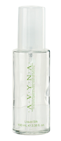

CABELLO DECOLORADO
Bleached Hair
La línea ideal para cabello sensibilizado con daño químico y/o mecánico. Gracias a su alto contenido de queratina y colágeno, rellena la hebra capilar generando una acción de reparación; a su vez, hidrata y reconstruye el cabello compensando los efectos negativos causados por procesos químicos, devolviéndole el brillo y la sedosidad al cabello.

CABELLO DESHIDRATADO
DRY HAIR CARE
La línea ideal para cabellos naturales, secos, opacos y de baja resistencia que se pueden quebrar fácilmente. Gracias a su ingrediente principal, el extracto de árgan, nos ayuda a reestructurar, promoviendo la renovación celular y aportando los nutrientes necesarios para tener un cabello suave y brillante.
CABELLO TENIDO
COLOR CARE
La línea ideal para cabellos teñidos. Gracias a sus propiedades antioxidantes, nos ayuda a mantener el color y el brillo del tinte por más tiempo. Equilibra los niveles del pH y reduce la perdida de proteína en el cabello logrando cabellos más fuertes y sanos.
CABELLO RUBIO
BLOND HAIR
La línea ideal para cabellos rubios, platinados y con canas. Ayuda a contrarrestar los reflejos cálidos que aparecen por el efecto de la oclusión y gracias a su proteína de seda protege el cabello manteniéndolo sedoso, hidratado y con un color espectacular.
CUERO CABELLUDO
SCALP CARE
La línea ideal para cabellos débiles, escasos y quebradizos. Gracias a los extractos de hierbas esenciales contribuye a la prevención de la caída de cabello, oxigenando y aumentando la resistencia del cabello, lo que estimula el crecimiento capilar.
CUERO CABELLUDO SENSIBLE
SENSITIVE SCALP
La línea ideal para cuero cabelludo sensible, grasoso o con caspa. Ayuda a equilibrar y purificar el cuero cabelludo gracias al extracto de agave y aceites esenciales. Es completamente libre de sulfatos y parabenos lo que mantiene a tu cuero cabelludo protegido y nutrido.
TRATAMIENTOS ESPACIALES
SPECIAL TREATMENTS
Tratamientos especiales sin enjuague para mejores condiciones en tu cabello, que puedes combinar con cualquier Shampoo o Maschera Avyna, logrando mayor cuerpo, volumen y brillo en tu cabello, facilitando el peinado.
PIGMENTACION DEL CABELLO
HAIR PIGMENTATION
Crea colores intensos con una cobertura perfecta del cabello blanco, reflejos vibrantes y luminosos, manteniendo la fidelidad del color por más tiempo. Su mezcla homogénea baja en amonia está enriquecida con ingredientes activos Zenzero, además de los mejores antioxidantes de los 5 continentes: Argán, Vainilla, Goji, Camomila y Macadamia.
ESTILIZADO
HAIRSTYLE
La familia de Xtyling de Avyna te ayudará a dar un toque más profesional a tus creaciones, con acción multi protectora para el cabello durante el peinado, logrando como resultado final cabellos sanos, brillantes y con estilos versátiles.
SKIN
AVYNA COSMETICI
 Shampoo
Shampoo
Tratamiento que lava eficaz y suavemente, reestructurando la hebra capilar. Su fórmula libre de parabenos, limpia y refuerza el cabello, dejándolo sedoso y brillante.
Precio:
1000 ml = $515 / 500 ml = $315
Maschera
Tratamiento reparador extremo con enjuague, que gracias a su fórmula enriquecida con colágeno, ácido hialurónico y queratina, nutre, hidrata y reconstruye el cabello.
Precio:
250 ml = $330
Fluido Ialuronico
Tratamiento que otorga un cabello lleno de hidratación, nutrición, suavidad y brillo. Facilita el peinado y protege el cabello con una fina película de moléculas de agua que evitan la deshidratación por frío y calor ambiental.
Precio:
100 ml = $535
Ricostruttore Ialuronico
Tratamiento reparador instantáneo sin enjuague con nutrición intensa. Gracias a su innovadora fórmula basada en ácido hialurónico, nutre, hidrata y repara el cabello más dañado, dejándolo suave y con brillo.
Precio:
250 ml = $330
Bifasico Ialuronico
Tratamiento ligero sin enjuague ideal para cabellos muy procesados y decolorados. Su avanzada fórmula de dos fases, hidrata, desenreda y protege la hebra capilar sin agregar peso al cabello. Ideal para antes de cortar.
Precio:
200 ml = $400
 Finale Ialuronico
Finale Ialuronico
Tratamiento en spray reestructurante. Su fórmula exclusiva de colágeno, ácido hialurónico, queratina, aceite de argán y proteínas aporta brillo, hidratación y nutrición al cabello. Sus efectos se activan con el calor de la plancha o tenaza.
Precio:
200 ml = $260
 SHAMPOO DI ARGAN
SHAMPOO DI ARGAN
Tratamiento de nutrición intensa que lava eficaz y suavemente aportando brillo al cabello. Indicado para los cabellos más deshidratados por su eficaz acción reconstructora, protectora y antioxidante.
Precio:
1000 ml = $510 / 500 ml = $325
MASCHERA DI ARGAN
Tratamiento con enjuague reparador intensivo ideal para cabellos procesados químicamente, neutraliza los radicales libres y proteger el cabello de los agentes externos, sellando la cutícula. Aportando suavidad y luminosidad.
Precio:
1000 ml = $490 / 500 ml = $320
FLUIDO DI ARGAN
Tratamiento concentrado que previene la degeneración y el envejecimiento de la fibra, repara las puntas abiertas y deterioradas, aportando brillo y suavidad al cabello.
Precio:
100 ml = $535
RICOSTRUTTORE DI ARGAN
Tratamiento reparador instantáneo sin enjuague. Su innovadora fórmula basada en extracto de argán, nutre y repara la fibra capilar, especialmente las zonas más dañadas.
Precio:
250 ml = $330
BIFASICO DI ARGAN
Tratamiento acondicionador instantáneo con acción hidratante, nutritiva y equilibrante de la hebra capilar. Enriquece el cabello con los beneficios del argán sin agregar peso.
Precio:
200 ml = $335
LISCIANTE DI ARGAN
Tratamiento concentrado que previene el frizz, ayuda con la disciplina de tu cabello y mantiene un peinado más liso por más tiempo. Protección térmica hasta 220 °C para secadora.
Precio:
1000 ml = $1,030 / 250 ml = $380
 SHAMPOO DI GOJI
SHAMPOO DI GOJI
Tratamiento protector del color con acción antioxidante y suavizante debido a su complejo proteínico. Lava los cabellos cuidando y prolongando la duración y la fidelidad del color cosmético. Shampoo libre de sulfatos y en versión vegana.
Precio:
1000 ml = $520 / 500 ml = $335
MASCHERA DI GOJI
Tratamiento con enjuague, potenciado con aminoácidos que perfeccionan el proceso de coloración, sellando el color para un efecto duradero. Por sus principios activos, sella, protege y nutre el cabello, logrando un color más brillante e intenso.
Precio:
1000 ml = $565 / 500 ml = $340
 FLUIDO DI GOJI
FLUIDO DI GOJI
Tratamiento con una fórmula impecable que concentra las propiedades del goji en un perfecto balance con otros ingredientes de alto rendimiento, logrando un cabello suave, acondicionado y manejable.
Precio:
100 ml = $535
RICOSTRUTTORE DI GOJI
Tratamiento reparador instantáneo sin enjuague con nutrición intensa especial para cabellos teñidos.
Precio:
250 ml = $330
 BIFASICO DI GOJI
BIFASICO DI GOJI
Tratamiento acondicionador instantáneo y sin enjuague de dos fases. Hidrata, desenreda y protege la hebra capilar sin agregar peso.
Precio:
200 ml = $335
 STABILIZZATORE DI GOJI
STABILIZZATORE DI GOJI
Tratamiento ácido equilibrante del pH con acción estabilizadora y selladora. Gracias al extracto de goji y manteca de karité, estabiliza el pH de la hebra capilar y de la piel del cuero cabelludo después de los procesos químicos, prolongando el brillo y duración del color en el cabello.
Precio:
500 ml = $270
LOZIONE DI GOJI
Loción estabilizadora ideal para después de los procesos químicos. Descongestiona la piel y regulariza el pH del cabello, eliminando las impurezas y residuos de los tratamientos alcalinos. Nutre y da brillo, dejando el cabello fácil de peinar.
Precio:
12 x 10 ml = $610
 FINALE - X
FINALE - X
Tratamiento en spray alisador anti- crespo con ácido glioxílico, ayuda a mantener tu alisado progresivo por más tiempo, idónea para prolongar la duración de un peinado liso, con protección térmica de secadora y plancha.
Precio:
200 ml = $465
SHAMPOO PLATINO
Tratamiento que lava y atenúa los reflejos amarillos de los cabellos canosos, rubios claros o decolorados, gracias a su pigmento violeta. La proteína de seda contiene valiosas propiedades nutricionales para tratar el cabello con máxima suavidad. Al inicio usar diario. Al lograr el matiz necesario usar de 1 a 3 veces por semana.
Precio:
1000 ml = $560 / 500 ml = $340
BIFASICO PLATINO
Tratamiento acondicionador instantáneo de dos fases con acción hidratante, nutritiva, reparadora para cabellos decolorados, rubios cenizos y cabello cano. Con queratina vegetal de soya y quinoa.
Precio:
200 ml = $400
MASCHERA PLATINO
Complemento ideal del Shampoo Platino. Refuerza el efecto matizador que otorga el Shampoo en cabellos con reflejos amarillos dejando un cabello suave y brillante.
Precio:
1000 ml = $520 / 500 ml = $335
FLUIDO PLATINO
Tratamiento concentrado de queratina vegetal, ayuda a mantener mayor fuerza y elasticidad del cabello decolorado, protege la hebra capilar contra factores externos, dejando una apariencia de mucho brillo, suavidad y desenredo. Con queratina vegetal de soya y quinoa.
Precio:
100 ml = $645
RICOSTRUTTORE PLATINO
Tratamiento reparador instantáneo sin enjuague. Su innovadora formula nutrte y repara cabellos decolorados, rubios o platinados. Con queratina vegetal de soya y quinoa.
Precio:
250 ml = $330
SHAMPOO ABBONDANZA
Tratamiento especial para cabellos escasos. Fortalece el cabello y previene su caída. Sus extractos de hierbas aumentan la resistencia y estimulan el crecimiento capilar. Usar 3 veces por semana.
Precio:
1000 ml = $510 / 250 ml = $220
LOZIONE ABBONDANZA
Tratamiento de shock contra la caída persistente del cabello, enriquecido con proteína de soya, extracto de romero, extracto de ortiga y otros ingredientes. Ejerce una función tonificante y nutritiva para los cabellos favoreciendo su crecimiento. Eficaz efecto estimulante y purificador.
Precio:
12 x 10 ml = $610
SHAMPOO DI AGAVE
Tratamiento libre de parabenos, sulfatos, alcohol y con perfume natural. Gracias a su fórmula enriquecida con extracto de agave, eucalipto y el aceite esencial de lavanda, actúa como purificador del cuero cabelludo.
Precio:
1000 ml = $645 / 500 ml = $380
BIFASICO DI AGAVE
Tratamiento sin enjuague ideal para cueros cabelludos sensibles. Su fórmula rica en extracto de agave, menta, romero, además del aceite esencial de lavanda, hidrata el cabello al mismo tiempo que purifica el cuero cabelludo sin aportar peso.
Precio:
200 ml = $400
 POZIONE 10
POZIONE 10
Mascarilla intensiva de 10 beneficios (Cuida el color, desenreda, previene puntas abiertas, facilita el secado, protección térmica, repara cabello dañado, anti frizz, protege del calor, facilita el peinado, aporta brillo y suavidad). Adecuada para todo tipo de cabello: fino, seco, decolorado, rizado y maltratado.
Precio:
250 ml = $300
LOZIONE DI CHERATINA
Loción con efecto reconstructurante sin enjuague. Enriquecida con queratina, manteca de karité y proteínas del trigo, refuerza el tallo de los cabellos dañados y muy secos, aportando tono y brillo extraordinario. Aporta instantáneamente una increíble sensación de suavidad gracias a la acción de las micro-emulsiones a la silicona. No deja residuos grasos.
Precio:
12 x 10 ml = $610
PIGMENTO ZENZERO
Tratamiento hidratante con color. Sus ingredientes completan la acción nutritiva para lucir un cabello con un color vibrante, sano, brillante y luminoso. Cabello natural: Aporta luminosidad y leves reflejos. Cabello teñido: Intensifica el reflejo y da brillo, mantiene el color entre una aplicación y otra. Cabellos con canas: Matiza y disimula las canas. Cabello decolorado: Matiza o crea efectos de fantasía, vibrantes e intensos.
Precio:
250 ml = $370
COLORES DISPONIBLES
PICS OF COLORS
Precio:
250 ml = $370
LIQUID SILK
Protector térmico para el calor directo e indirecto. Recubre el cabello con una película y lo protege contra la deshidratación, aportándole brillo y suavidad.
Precio:
100 ml = $545
LISS DI LINO
Tratamiento sin alcohol especial para alisar y controlar cabellos rizados y rebeldes. Su fórmula protege el cabello del calor de las herramientas térmicas. Actúa como protección antihumedad por 24 horas.
Precio:
150 ml = $580
WET LOOK
Fluido efecto húmedo que aporta suavidad y elasticidad marcando los cabellos ondulados y rizados. Gracias al pantenol y a la proteína de seda logra el efecto mojado sin maltratar la hebra capilar.
Precio:
300 ml = $300
XTYLING CURLY
Moldea, define y refuerza el rizo brindando elasticidad y brillo. Ideal para cabellos rizados. Elimina el efecto crespo con máximo control. Gracias al pantenol moldea peinados sin maltratar el cabello.
Precio:
300 ml = $395
XTYLING MOUSSE
Nutre los cabellos secos y cansados otorgándoles brillo y cuerpo. Ayuda a definir los rizos gracias al poder hidratante del Pantenol.
Precio:
300 ml = $355
GEL EXTRA FORTE
Gel capilar extra fuerte, peina y esculpe con decisión, para looks extremos y de larga duración. Se seca rápidamente, sin resecar el cabello y sin dejar residuos.
Precio:
500 ml = $410 / 250 ml = $240
LACCA EXTRA FORTE
Spray ideal para lograr fijación en toda la cabellera sin que resulte pesada. Se elimina fácilmente con pocos cepillados. No deja residuos.
Precio:
750 ml = $710
FIBER PASTE
Cera modeladora con brillo natural. Define los peinados con precisión. Esculpe y moldea el cabello para lograr estilos estructurados.
Precio:
150 ml = $385